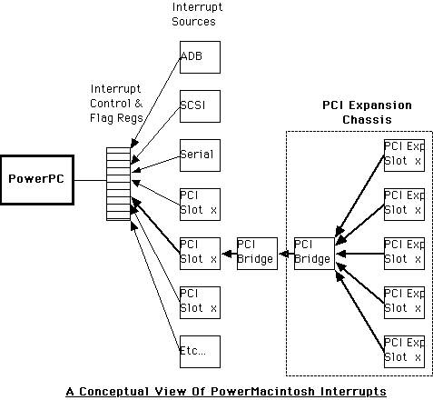

Defining the ProblemYou may experience system crashes and/or the inability to access memory or I/O space on PCI cards that are plugged into a PCI expansion chassis. The same cards may work fine plugged into a direct PCI host slot. Problem ScenarioThe following lists possible causes for PCI expansion chassis problems:
Why This Hasn't Been a Problem BeforePreviously, Apple manufactured 6-slot systems (i.e., 95xx/96xx Macs); thus, the need for an external expansion chassis was diminished because 6 slots were already available for PCI expansion in the host system. The Power Macintosh G3 provides only 3 slots; therefore, some applications have migrated to using PCI expansion chassis to contain the hardware configuration. Coping with Expansion Chassis IssuesIt's not always easy to resolve problems associated with a PCI expansion chassis, and a limited number of developers have need of such an implementation. Although cards plugged into the expansion chassis should, in theory, experience only minimal effect on overall transaction timing, the reality is that there are subtle design issues introduced by the architecture itself that must be addressed. First, additional propagation delay for the sub-bridge levels is introduced by the expansion chassis. A typical implementation is two sub-bridge levels deep, requiring extra PCI clock cycles for each level. Further delays are experienced if the cards themselves possess additional PCI sub-bridges. These delays are a combination of posting operations and actual propagation delays introduced by the hardware itself. When cards are plugged into a host expansion slot, hardware exists in the host that provides information about which device slot is interrupting. On the other hand, all interrupts from an expansion chassis are funneled into a single interrupt slot line. This concept is known as "interrupt sharing." With interrupt sharing, the driver needs to ensure it does not depend solely on the hardware slot indicator for interrupt association. Instead, a well-behaved driver should follow the rules set forth in Designing Cards and Drivers for Power Macintosh Computers:
Interrupts should, of course, only be enabled when the card's hardware is ready to be serviced. The expansion chassis will likely have more than one developer's card inserted; thus, if the driver enables interrupts prematurely, and another interrupt is already pending from a neighboring slot, the driver could end up attempting to service the wrong interrupt. Again, following the rules will prevent this. The Power Macintosh does not employ a vectored-interrupt architecture: the interrupt source tree must be traversed for each pending interrupt. This has the advantage of abstracting the interrupt handler from the hardware source, but makes it extremely important to return control immediately if your handler is not the intended service routine in order to minimize interrupt response time.
Extra time should be allowed for the hardware to properly reset interrupt flags that have been asserted, because latencies could make the interrupt look as though it is still asserted for a brief time. This is due to the accumulative full-turn delays of propagating down to the source hardware itself, then back to the host motherboard. The condition may cause the handler to be re-invoked after returning to its caller; however, when the handler regains control, the hardware interrupt has been cleared and the handler will return a
Attempting to make a hypothetical determination as to which cards will work together and in what slot order is extremely difficult due to potential card interaction. This is due in part to loading characteristics and probing order as the cards are initialized. The bottom line is that any given configuration should be empirically tested to see if any problems arise. If problems are encountered, try switching the order of the cards in the slots. At the time of this writing, no known expansion chassis problems are being encountered in Lastly, spurious interrupts are symptomatic of the problems associated with expansion chassis operation, so be on the lookout for them as an indication of a potential interrupt timing problem. Additional Notes & CommentsThe following are some important items that you may need to consider when working through the problem of using a PCI expansion chassis:
SummaryProblems introduced by PCI expansion hardware can be difficult to solve, because the issues involved were generally not a concern prior to the absence of 6-slot systems. Many of the problems can be avoided, however, by strict adherence to the ordering rules laid out in the PCI specification, and re-thinking the methods used in single-card-per-slot implementations. ReferencesPCI Local Bus Specification, revision 2.1 Designing PCI Cards and Drivers for Power Macintosh Computers Technote 1104: Interrupt-Safe Routines Technote 1001: On Power Macintosh Interrupt Management Downloadables
|